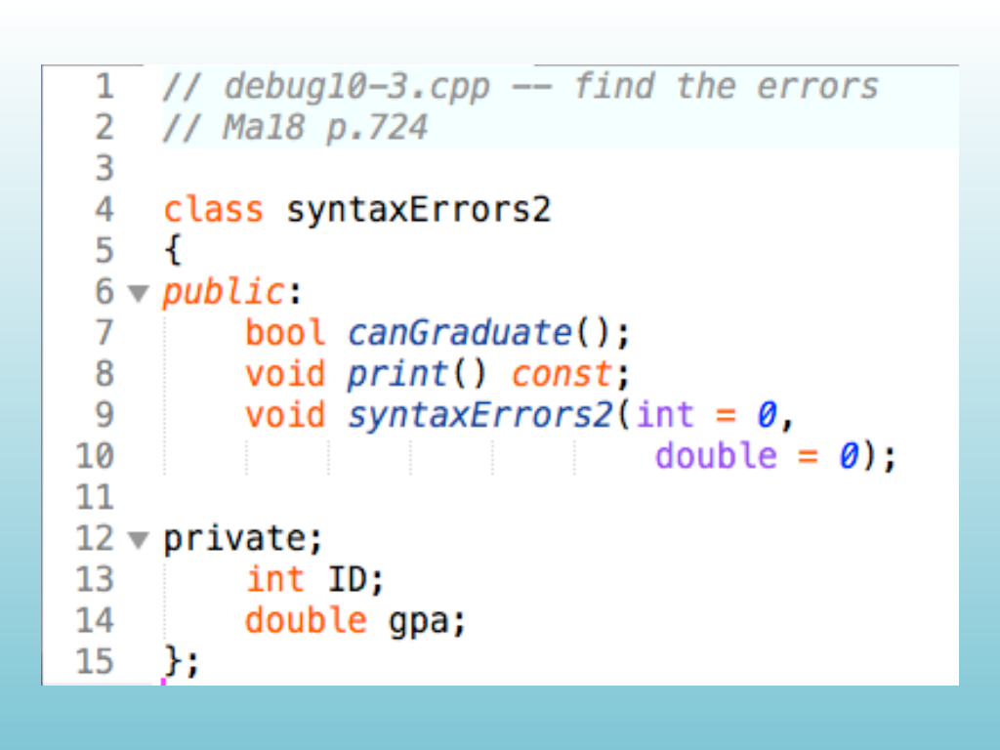

C++
this pointer and constant member functionsthis pointer and constant member functionsYou have an object named myWidget. You need to make a copy of it named yourWidget. How can one object refer to its own state while a member function is running?
A class has a data member and a member-function parameter with the same name. The function must distinguish the object’s member from the local parameter.
// 11-1x.cpp -- this demo problem
#include <iostream>
using namespace std;
class Example {
private:
int x;
public:
Example(int a) { x = a; }
void setValue(int);
void printAddressAndValue();
};
void Example::setValue(int a) {
x = a;
}
void Example::printAddressAndValue() {
int x = 50;
cout << "Object at address: " << " ??? "
<< " has x value: " << x << endl;
}
int main() {
Example obj1(10);
Example obj2(20);
obj1.printAddressAndValue();
obj2.printAddressAndValue();
return 0;
}
// How do we print out the class variable x?A member function operates on the object that receives the call. Inside that function, the current object can be referred to through the implicit this pointer.
this points to the object whose member function is running.this->member selects a data member belonging to the current object.#include <iostream>
using namespace std;
class Example {
private:
int x;
public:
Example(int value) { x = value; }
void printAddressAndValue();
};
void Example::printAddressAndValue() {
int x = 50;
cout << "Object address: " << this
<< " has x value: " << this->x << endl;
}
int main() {
Example obj1(10);
Example obj2(20);
obj1.printAddressAndValue();
obj2.printAddressAndValue();
return 0;
}Answer
this points to the object whose member function is running.
this->x selects the object’s data member, so the two calls report values 10 and 20. The local x remains 50.
this pointer identifies the current object inside its member functions.A member function receives an implicit pointer to the object that called it. The expression this->member makes that relationship visible.
We want to create a Rec class and add two rectangle-like objects together. First, we will use an ordinary function. Then we will move the operation into the class.
Let’s build an Add() function that receives two Rec objects and returns a third object containing their combined values.
#include <iostream>
using namespace std;
class Rec {
int x;
int y;
public:
Rec(int xx = 1, int yy = 1) {
x = xx;
y = yy;
}
void print() const {
cout << x << " by " << y << endl;
}
int getX() const { return x; }
int getY() const { return y; }
};
Rec Add(const Rec& lhs, const Rec& rhs) {
return Rec(lhs.getX() + rhs.getX(),
lhs.getY() + rhs.getY());
}
int main() {
Rec a(5, 5);
Rec b(5, 5);
Rec c = Add(a, b);
c.print();
return 0;
}The free function needs public accessors because it is not a member of Rec.
Let’s make Add() a method instead. The left-hand object becomes the current object, represented by this.
#include <iostream>
using namespace std;
class Rec {
int x;
int y;
public:
Rec(int xx = 1, int yy = 1) {
x = xx;
y = yy;
}
void print() const {
cout << x << " by " << y << endl;
}
Rec add(const Rec& rhs) const {
Rec result(this->x + rhs.x,
this->y + rhs.y);
return result;
}
};
int main() {
Rec a(5, 5);
Rec b(5, 5);
Rec c = a.add(b);
c.print();
return 0;
}As a member function, add can access private data directly.
How can we create one variable that is shared across every instance of a class?
Answer
count belongs to the class, so every constructor call updates the same variable.
With two objects, getCount() reports 2.
Answer
A static member function can be called through the class name.
The first call reports 0. After constructing two objects, the second call reports 2.

class D6 {
public:
int x;
static bool isInitialized;
D6() {
if (!isInitialized) {
srand(static_cast<unsigned>(time(nullptr)));
isInitialized = true;
cout << "Init code run" << endl;
}
x = rand() % 6 + 1;
}
};
bool D6::isInitialized = false;
int main() {
D6 a;
D6 b;
cout << a.x << endl;
cout << b.x << endl;
return 0;
}Answer
The first constructor call performs the shared initialization and sets the static flag.
Later objects skip that block. The initialization message appears once, followed by one random value for each object.
class D6 {
public:
int x;
D6(bool& initialized) {
if (!initialized) {
srand(static_cast<unsigned>(time(nullptr)));
initialized = true;
cout << "Init code run" << endl;
}
x = rand() % 6 + 1;
}
};
int main() {
bool initialized = false;
D6 a(initialized);
D6 b(initialized);
cout << a.x << endl;
cout << b.x << endl;
return 0;
}Answer
The two objects receive the same initialization state by reference.
The first object changes the shared flag. The second object sees that the flag is already true and does not repeat the initialization.
#include <iostream>
using namespace std;
class Counter {
private:
static int total;
public:
Counter() {
++total;
}
static void printTotal() {
cout << "Total objects: " << total << endl;
}
};
int Counter::total = 0;
int main() {
Counter::printTotal();
Counter first;
Counter second;
Counter::printTotal();
return 0;
}Static data is shared. Ordinary data members remain separate for each object.
Have you ever wondered how the * symbol can do so many different things in a program?
It is overloaded: its meaning depends on the operands and context.
+, -, /, or * symbols for your own objects?Many operators are another way to write a function call. C++ lets a class provide a function whose name is an operator.
For example, a + b can call an overloaded operator+.
Changing the way a standard operator works for a user-defined type is called operator overloading.
The operator keeps its spelling in an expression, but the class supplies the behavior.
Operators that can be overloaded
+, -, *, and /==, <, and ><< and >>Operators that cannot be overloaded
..*::?:sizeofOperator overloading lets objects use familiar C++ syntax.
The expression can read like the operation it represents.
For a member overload:
The expression:
uses the left operand as the object that receives the member-function call.
#include <iostream>
using namespace std;
class Rec {
private:
int x;
int y;
public:
Rec(int xx = 1, int yy = 1) {
x = xx;
y = yy;
}
void print() const {
cout << x << " by " << y << endl;
}
Rec operator+(const Rec& rhs) const {
return Rec(x + rhs.x, y + rhs.y);
}
};
int main() {
Rec a(5, 5);
Rec b(5, 5);
Rec c = a + b;
c.print();
return 0;
}The overloaded operator returns a new Rec whose dimensions are the sums of the operands.
The choice depends on which operand must be the object and which data the function needs to access.
Arithmetic and relational operators can be implemented as either member functions or stand-alone functions.
A stand-alone function is often preferred when the left operand should not be a class object or when the operation should treat both operands symmetrically.
#include <iostream>
using namespace std;
class Sales {
private:
int receiptNumber;
double amount;
public:
Sales(int number = 0, double value = 0.0) {
receiptNumber = number;
amount = value;
}
Sales operator+(const Sales& transaction) const {
return Sales(999, amount + transaction.amount);
}
void showSale() const {
cout << "Sale " << receiptNumber
<< " for $" << amount << endl;
}
};
int main() {
Sales a(1567, 39.95);
Sales b(1568, 33.55);
Sales c(1123, 49.95);
Sales total = a + b + c;
total.showSale();
return 0;
}Each + produces a Sales object that can become the left operand of the next +.
A class can overload both forms:
++object changes the object and returns the updated object.object++ returns the old value and then changes the object.int parameter distinguishes postfix syntax.How do we allow multiple operations on the same line?
Each overloaded operation must return a type that can participate in the next operation.
A comparison overload lets an object participate in a condition.
The result should be a Boolean answer.
#include <iostream>
using namespace std;
class Length {
private:
int inches;
public:
Length(int value = 0) { inches = value; }
int getLength() const { return inches; }
Length& operator++() {
++inches;
return *this;
}
Length operator++(int) {
Length old = *this;
++inches;
return old;
}
};
int main() {
Length test(3);
Length temporary;
temporary = ++test;
cout << temporary.getLength() << " "
<< test.getLength() << endl;
temporary = test++;
cout << temporary.getLength() << " "
<< test.getLength() << endl;
return 0;
}Prefix returns the updated object. Postfix preserves and returns the old value before incrementing.
#include <iostream>
using namespace std;
class Example {
private:
int id;
public:
Example(int value) { id = value; }
bool operator==(const Example& rhs) const {
return id == rhs.id;
}
};
int main() {
Example first(1234);
Example second(5678);
if (first == second) {
cout << "They are equal" << endl;
} else {
cout << "They are not equal" << endl;
}
return 0;
}The overloaded comparison reads like a built-in comparison while still using the class’s private state.
For two objects with different identifiers, the comparison expression evaluates to false.
Use comparison overloads when the class has a meaningful notion of equality or ordering.
The operator should compare the state that defines the class’s identity.
Ask two questions:
Use a member overload when the left operand is the natural object. Use a friend stand-alone function when an external left operand or symmetric access is required.
We want to print the contents of one of our classes. The design must coordinate the class and the output stream.
A class can expose either:
Print()cout << object#include <iostream>
using namespace std;
class RecType {
private:
double length;
double width;
public:
RecType(double l = 0.0, double w = 0.0) {
length = l;
width = w;
}
void print() const {
cout << "Length = " << length
<< "\nWidth = " << width << endl;
}
};
int main() {
RecType gold(10, 33);
gold.print();
return 0;
}A member function is direct and simple, but clients must know the class-specific function name.
The desired interface is the same syntax used for built-in values:
The class should describe its own output while the stream remains the left operand.
C++ supports more than one constructor for a class. That is method overloading.
C++ also lets a class define behavior for symbols such as +, -, and <<. That is operator overloading.
The left operand and the required access to private data determine which form fits.
Use a member function when:
The left operand becomes the object that receives the member-function call.
Consider an expression such as:
The left-hand operand is cout, an object of the standard-library stream class. The class being printed is on the right.
We cannot add a member function to the standard stream class because we do not own that class.
The stream insertion and extraction operators therefore need to be implemented as free functions.
The free function needs access to the class’s private data unless the class exposes getters for every field.
A friend declaration gives the chosen free function access without making all data public.
A friend is a function or class that is not a member of the class but is granted access to its private members.
The friend declaration appears inside the class. The definition remains a stand-alone function.
A friend function is useful when an external operation needs private state.
The stream insertion operator is a common example because the stream object must remain the left operand.
The expression:
is conceptually a call to a stand-alone operator function:
The function can access point’s private fields when the class declares it as a friend.
The class decides which functions or classes become friends.
Friendship is explicit and selective. It is not automatically inherited by every function that happens to use the class.
#include <iostream>
using namespace std;
class RecType {
private:
double length;
double width;
public:
RecType(double l = 0.0, double w = 0.0) {
length = l;
width = w;
}
friend ostream& operator<<(ostream& output,
const RecType& rec);
};
ostream& operator<<(ostream& output, const RecType& rec) {
output << "Length = " << rec.length
<< "\nWidth = " << rec.width;
return output;
}
int main() {
RecType gold(10, 33);
cout << gold << endl;
return 0;
}The stand-alone operator function accesses private fields because it is a friend.
#include <iostream>
using namespace std;
class Square;
class Rectangle {
private:
int width;
int height;
public:
int area() const {
return width * height;
}
void convert(const Square& square);
};
class Square {
private:
int side;
public:
Square(int value) {
side = value;
}
friend class Rectangle;
};
void Rectangle::convert(const Square& square) {
width = square.side;
height = square.side;
}
int main() {
Rectangle rect;
Square square(4);
rect.convert(square);
cout << rect.area() << endl;
return 0;
}A friend class can access the private members of the class that grants friendship.
Both classes grant the same stand-alone function access to their private data.
Don’t think of a friend as something outside of the class. Instead, think of it as part of the class’s public interface.
— C++ FAQ
A friend is still a deliberate part of the class design.
Friend functions let a class participate naturally in operations whose left operand belongs to another class.
They are especially useful for stream insertion and extraction.
#include <iostream>
using namespace std;
class RecType {
private:
double length;
double width;
public:
RecType(double l = 0.0, double w = 0.0) {
length = l;
width = w;
}
friend ostream& operator<<(ostream& output,
const RecType& rec);
};
ostream& operator<<(ostream& output, const RecType& rec) {
output << "Length = " << rec.length
<< "\nWidth = " << rec.width;
return output;
}The overload returns the stream by reference so insertion can continue with another value.
#include <iostream>
using namespace std;
class Complex {
private:
int real;
int imag;
public:
Complex(int r = 0, int i = 0) {
real = r;
imag = i;
}
friend ostream& operator<<(ostream& output,
const Complex& value);
friend istream& operator>>(istream& input,
Complex& value);
};
ostream& operator<<(ostream& output, const Complex& value) {
output << value.real << "+" << value.imag << "i";
return output;
}
istream& operator>>(istream& input, Complex& value) {
input >> value.real >> value.imag;
return input;
}
int main() {
Complex value;
cin >> value;
cout << "The complex object is " << value << endl;
return 0;
}The input and output operators both remain stand-alone functions and both are friends of Complex.
Activity
Create a Point2D class that represents a point in a two-dimensional plane with x and y coordinates.
<< to display the point as (x, y).>> to read the point’s coordinates.CISP 400 · Fowler